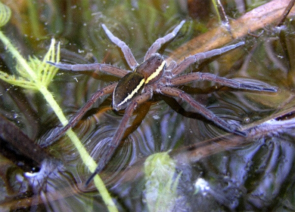

Богомол пятнистокрылый
Богомол пятнистокрылый
Богомол пятнистокрылый(лат. Iris polystictica) — вид насекомых из семейства Tarachodidae отряда богомоловых.
|

Охотник полосатый
Охотник полосатый(лат. Dolomedes plantarius) — распространённый в Европе вид пауков из семейства Pisauridae. |
|
Богомол пятнистокрылый
Богомол пятнистокрылый(лат. Iris polystictica) — вид насекомых из семейства Tarachodidae отряда богомоловых. |
 Дыбка степная
Дыбка степная
Дыбка степная(лат. Saga pedo) — кузнечик подсемейства дыбок. Самый крупный кузнечик России. |